Bau einer Qualle (leicht)
Erst einmal ein paar Informationen zum lesen
Auf manchen Systemen (Linux KDE/Gnome und SGI IRIX 4dwm) gibt es ein eigenes
Programmicon fuer "dune4kids", es sieht dann irgendwie so aus:


Auf Systemen wie Micro$oft Windows oder MacOSX ist aber nur ein
(anderes) Programmicon vorhanden:


Normalerweise startet das Programm dieses Icons beim ersten Mal
in der englischen Vollversion, in der Regel mit sehr vielen Icons
und zu vielen Menues.

Es muss dann zuerst einmal auf Deutsch und dann auf dune4kids umgestellt
werden.
Man muss
hier draufklicken um auf die richtige Version umschalten zu
können.

Was tun, wenn das Programm abstürtzt ?
Mit etwas Glück kann man den letzten Stand neu laden, wenn man bei
den aktuellen Dateien eine neue ".dune_crash" Datei findet.

Navigation
Navigation bedeutet das Herumbewegen im 3D-Modell.
Das ist wichtig, denn es kann sehr leicht passieren, dass man vor oder in
sein Werkstueck gerät und deswegen ueberhaupt nichts mehr sieht.
Wenn man nichts mehr sieht, gibt es zwei Vorgehensweisen, die man meistens
gemeinsam anwendet:
- Man geht nach hinten
Vorwärts und Rueckwärts geht man, indem man gemeinsam die linke
Maustaste und die "Shift"-Taste (deutsche Tastatur: "Leerer-Pfeil-hoch-Taste")
gedrückt hält.
In der Einstellung "Examine" (wenn das Icon  gedrueckt
ist) funktioniert das auch mit der mittleren Taste einer 3-Tasten-Maus.
Bei einer Maus mit Scrollrad muss man das mittlere Scrollrad
drücken.
gedrueckt
ist) funktioniert das auch mit der mittleren Taste einer 3-Tasten-Maus.
Bei einer Maus mit Scrollrad muss man das mittlere Scrollrad
drücken.
- Man dreht die 3D-Welt
Drückt man gemeinsam die linke Maustaste und die "Control"-Taste
("strg" auf der deutschen Tastatur) dann dreht sich die ganze
3D-Welt vor einem, wenn man die Maus bewegt. Das wird normalerweise
dazu benutzt, um ein neu erzeugtes Objekt von allen Seiten betrachten
zu koennen, hilft aber auch dann, wenn man im Nichts steht.
Man muss aber daran denken, dass der Inhalt nicht nur hinter einem
versteckt sein kann, sondern auch oben, unten, links oder rechts.
Das bedeutet, dass man oft ganz schön "kurbeln" muss, bis man
sein Objekt wiederfindet.
Zusätzlich gibt es noch die Möglichkeit, die linke Maustaste,
die "Shift"-Taste und die "Control"-Taste gleichzeitig gedrückt
zu halten (oder das Icon  benutzen).
Damit kann man sich in Richtung der Bildschirmfläche, also nach
oben, unten, links oder rechts bewegen.
benutzen).
Damit kann man sich in Richtung der Bildschirmfläche, also nach
oben, unten, links oder rechts bewegen.
Nachdem man sein Objekt wieder gefunden hat, sollte man wieder das
"Examine"-Icon drücken, damit man wieder
wie gewohnt arbeiten kann.
Icons für Veränderungen
Um zu zeigen, wie man Dinge verändern kann, wird einfach mal ein
Quader erzeugt.

Icons, um ganze Objekte zu verändern:
- Verschieben:


- Drehen:


- Vergrössern/verkleinern:


- Gleichartig vergrössern/verkleinern:


- Drehpunkt verschieben:


Mit weissen Kästchen kann man Objekte selber verändern.
Mit den einzelnen Pfeilicons  kann man die Richtung
steuern.
kann man die Richtung
steuern.
Wird zum Beispiel nur der grüne Pfeil hereingedrückt,
 kann bei
kann bei

ein Kästchen nur in Richtung des grüne Pfeils geschoben werden.
 .
.
Genau wie man Pfeile auch an den Schäften statt an den Spitzen
packen kann, um in einer Ebene verschieben zu können, kann man
auch zwei Pfeile gleichzeitig hereingedrücken  ,
um ein Kästchen in einer Ebene verschieben zu können.
,
um ein Kästchen in einer Ebene verschieben zu können.
Jetzt geht es los: Bau einer Qualle (leicht)
Die folgende Beschreibung sollte man eher als Vorschlag betrachten und
nicht als Kochrezept, das man sklavisch befolgen muss.
Eine Qualle wird aus zwei Teilen hergestellt: einem Schirm und einer Schleppe
aus Nesselfäden.
Für den Schirm beginnt man mit einer Halbkugel
Neu -> Halbkugel:
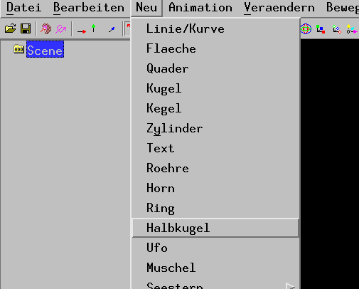
Eine Halbkugel wäre aber meistens zu langweilig.
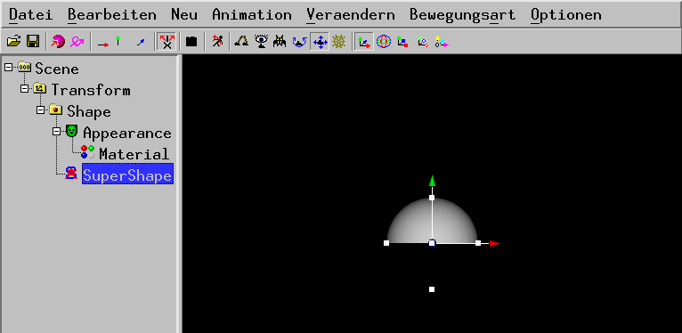
Um eine bessere Form
zu erreichen, muss muss man die Zahlen der Formel ändern, die
die Form des Schirms berechnet. Dazu benutzt man den Menüeintrag
Veraendern -> Zeige (manchmal) Zahlen:
Dabei kann man bei manchen angewählten Objekten im linken Fenster (hier
"SuperShape") die Zahlen verändern.
Wenn man die Felder mit den Zahlen anklickt, kann man Zahlen eintippen
(Achtung: "Kommazahlen" werden hier mit einem Punkt geschrieben).
Man kann auch die Zahlen verkleinern oder vergrößern indem man
eine Zahl anklickt ohne die Maustaste loszulassen (dabei erscheint ein
Doppelpfeil) und die Maus nach links oder rechts bewegt.
Die Zahlen, die für eine Quallenform benutzt werden können,
sind eigentlich ziemlich egal. Allerdings mit einer Ausnahme: die Zahl
für "um" sollte immer eine ganze Zahl sein (wie zum Beispiel 4 oder 5
oder 6) und nie eine Kommazahl (wie zum Beispiel 4.2 oder 8.9), denn sonst
sieht die Qualle etwas verzogen aus.
Jetzt sollte man das Zwischenergebnis in eine Datei abspeichern.
Beendet man das
Programm (oder schaltet man den Strom ab) ist alles verloren, wenn man
nicht in eine Datei abgespeichert hat. Zum Abspeichern benutzt man
Datei -> Speichern. Dabei öffnet sich ein Fenster, an
dessen unteren Rand man etwas eintippen kann. Am besten ist es, wenn
man das Wort Qualle, dann einen Unterstrich (dieses Zeichen: _), dann
seinen Vornamen, dann einen Unterstrich (_), dann seinen Nachnamen,
dann einen Unterstrich (_) und dann sein Alter eintippt.
Also wenn man
"Max Mustermann" heisst und 8 Jahre alt ist: Qualle_Max_Mustermann_8
Damit weiss man beim Zusammenbauen des Films, dass die Datei ein 3D-Modell
einer Qualle enthält und dass man "Max Mustermann, 8 Jahre" zu der
Qualle im Abspann schreiben muss.
Auch später (und vor allem am Schluss !) sollte man immer mal
wieder Datei -> Speichern benutzen, damit nichts verloren
geht.
Wenn der Schirm der Qualle fertig ist, muss die Schleppe gebaut werden.
Damit die Schleppe mitbewegt wird, wenn der Schirm bewegt wird, muss jetzt
im linken Fenster "Transform" angewält werden.
Danach benutzt man wieder Neu -> Halbkugel:
Jetzt sieht es auf den ersten Blick so aus, als hätte man
rü:ckwärts gearbeitet (wie wenn man Bearbeiten >
rueckgaenig machen benutzt hätte), aber die neue
Halbkugel (die Schleppe) verdeckt (je nach Blickwinkel)
nur den Schirm
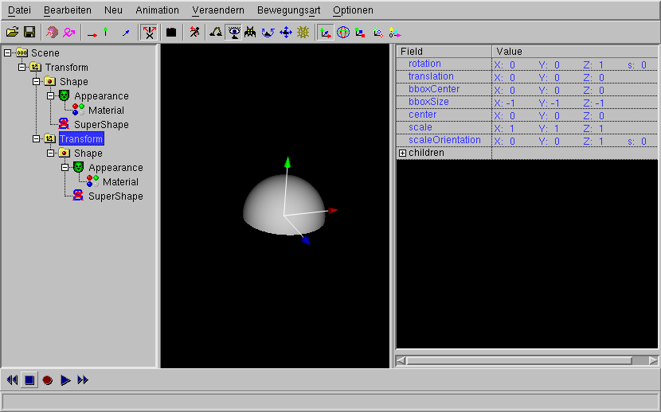
Danach benutzt man Bewegungsart -> nur y (gruen) (das entspricht
dem Hereindruecken des grünen Pfeils in der obersten Bildleiste), damit man
die Schleppe nicht versehentlich seitlich verschieben kann.
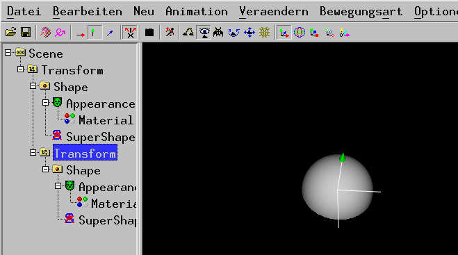
Jetzt klickt man das zweite Transform (das Transform der Schleppe) im linken
Fenster an, so dass man die Schleppe mit dem grünen Pfeil in nur eine
Richtung verschieben kann (Pfeil anklicken, die Maustaste festhalten und
die Maus verschieben).
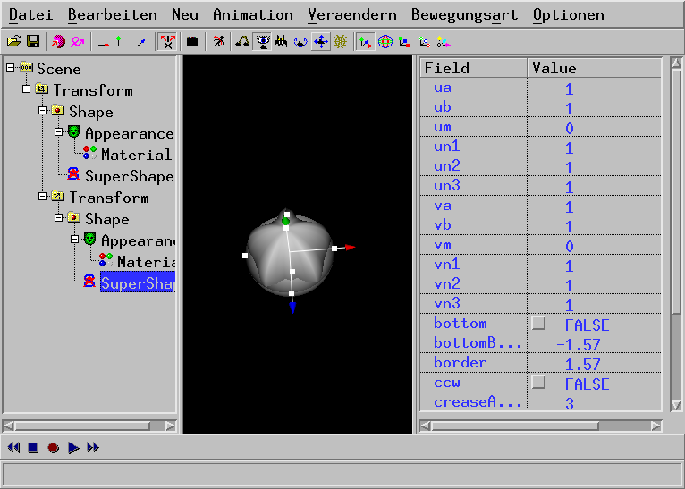
Wird die Schleppe angeklickt, kann man sie mit den weissen Kästchen
auf die richtige Größe bringen (Pfeil anklicken, die
Maustaste festhalten und die Maus verschieben). Dazu kann man auch die
Zahlen bei "size" benutzen. Danach benutzt man wieder Zahlen, um die
Form der Schleppe zu verändern.
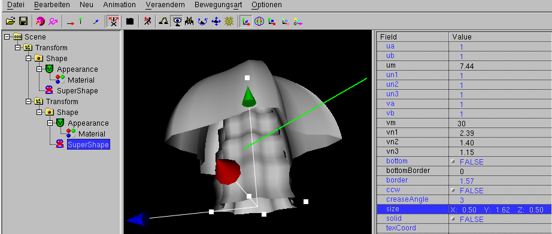
Quallen sind durchscheinend, deshalb muss im linken Fenster "Material"
der angeklickt werden. Wenn man kein "Material" sieht, wenn man das
entsprechende Objekt angeklickt hat: "Material" versteckt sich innerhalb
von "Appearance". Um "Appearance" zu öffnen, muss man auf das "+"
Zeichen neben dem Icon von Appearance" klicken.
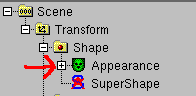
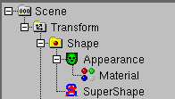
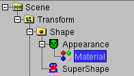
Wenn ein Material angewählt ist, kann man
Veraendern -> Durchsichtigkeit (braucht Material):
benutzen
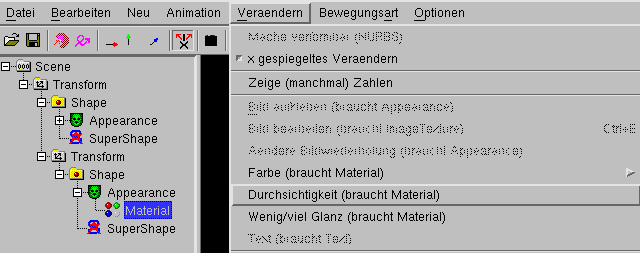
Es erscheint ein Fenster, bei dem man eine Zahl zwischen Null
und Eins eintippen kann. 0.5 (also Einhalb) ist ok.
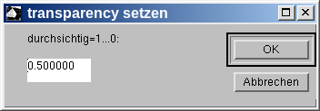
Danach wiederholt man das Ganze für den anderen
Quallenköperteil.
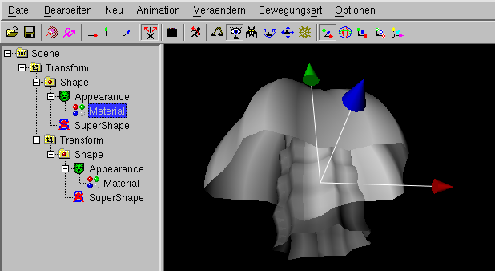
Qualle bewegen
Eine Qualle bewegt sich, indem sie ihren Schirm langsam
aufbläht und das dabei eingesaugte Wasser
ruckartig durch zusammenziehen des Schirms nach unten
drückt.
Für diese Bewegung muss man den "SuperShape" des
Schirmes im linken Fenster anklicken.
Danach benutzt man Animation ->
Neue Animation (Objekt z.B. Transform
(hier ist es stattdessen SuperShape) anwaehlen)
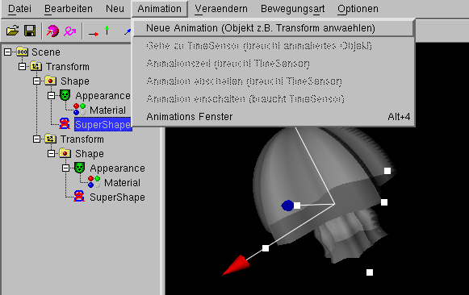
Jetzt öffnet sich ein Dialogfenster, bei dem man zuerst die
Animationszeit ändern muss. Eine Qualle braucht nicht 5 Sekunden,
um mit ihrem Schirm zu pumpen, sie braucht eher 1 oder 2 Sekunden.
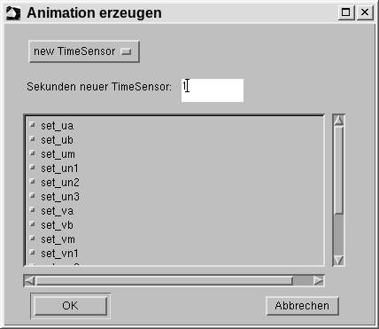
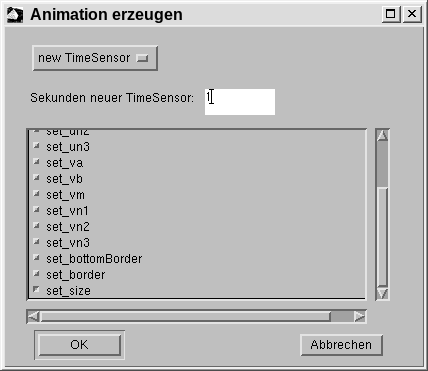
Danach kann man Ok drücken, denn "set_size" (für die
Größe des Schirms) ist schon angewält.
Danach drückt man in der untersten Leiste den roten Kreis und das blaue
Dreieck hinein. Das bedeutet, dass man gleichzeitig die Änderung aufnimmt
und abspielt.

Jetzt zieht man am oberen Kächen des Schirms, gleichzeitig wird die
(hoffentlich pumpende) Bewegung aufgezeichnet.
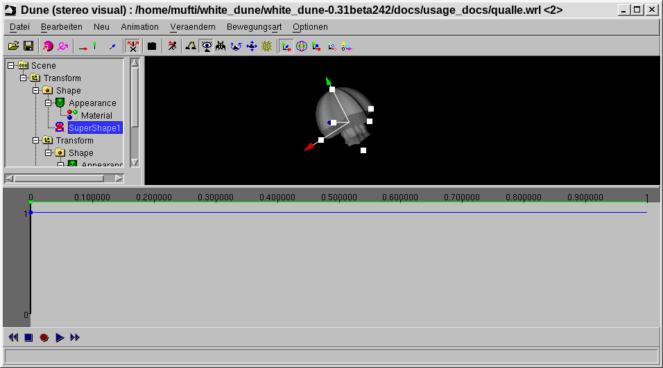
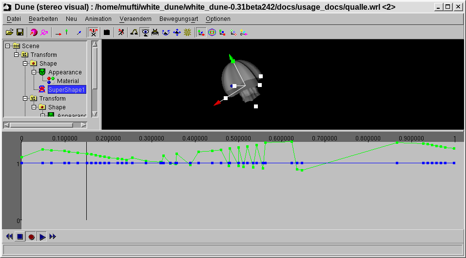
Danach soll sich die ganze Qualle fortbewegen.
Dazu muss man den ersten Transform im linken Fenster anwählen.
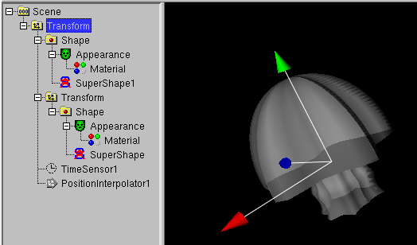
Danach benutzt man Animation ->
Neue Animation (Objekt z.B. Transform anwaehlen)
und drückt Ok.
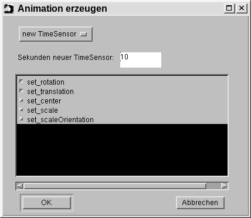
Jetzt vergewissert man sich, dass immer noch der ersten Transform im linken
Fenster anwählt ist, vergewissert sich, dass die unterste Leiste immer
noch auf Aufnahme und gleichzeitig Abspielen steht.
Danach bewegt man den Pfeil synchron zur Bewegung des Schirms
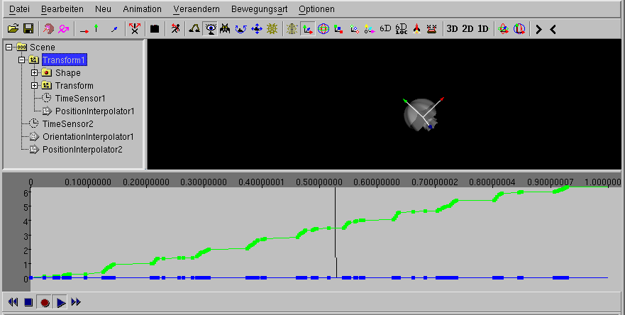
Geschafft !